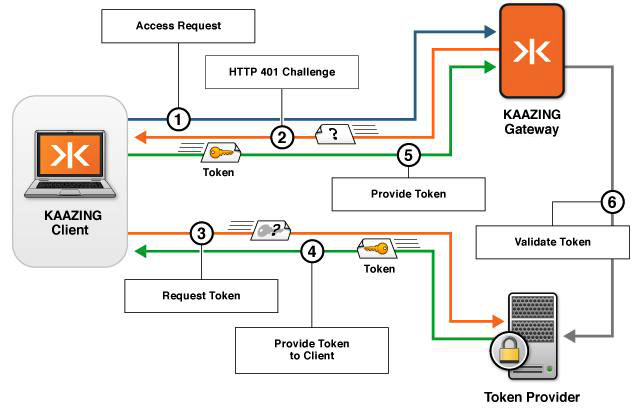

What Happens During Authentication
The following figure shows what happens when a client application (for example, a JavaScript application running in a browser) requests a WebSocket connection to Kaazing Gateway. The request is made as part of a hosted web application that uses a third-party token provider.

Figure: Authentication process between a client and the Gateway
The figure illustrates how interactions between the client, the Gateway, and a third-party token provider result in authentication, as follows:
- The client requests access to a protected WebSocket connection in the Gateway by clicking a link on a web page, or entering a specific URL.
- The Gateway issues an authentication challenge using the
HTTP 401 Authorization Requiredcode to the browser. This response also contains aWWW-Authenticate header, whose value indicates the authentication scheme and any authentication or challenge parameters that the client can use to respond to the challenge. - The client uses a third-party token provider to obtain a token that can be used as an authentication credential (other methods include a login page, a pop-up, and so on).
- The token provider provides the token.
- The client again requests a WebSocket connection to the Gateway, this time providing the third-party token (plus other challenge response data) via an authorization header in the HTTP request to the Gateway.
- The Gateway validates the token, either permitting the WebSocket connection to proceed (
101 Protocol Upgrade), or denying the WebSocket creation request (403 Forbidden).
Note: In this example, token validation occurs between the Gateway and token provider. Also, you can perform token validation when you configure login modules in the Gateway configuration.